StyleShow
Thank you for downloading StyleShow! If you have reached here, then you have already
succeeded in logging in! You can now start using StyleShow to its full potential.
Login Page
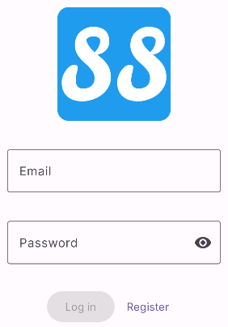
On our stylish, minimalistic login page, all you need to do is enter your username and password.
They are validated and checked against our database. If you are a new user, you can
register by tapping on the "Register" button.
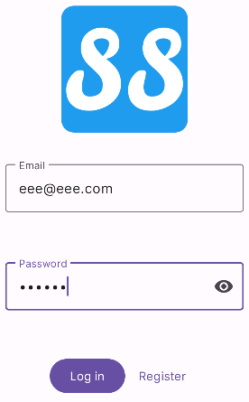
Once you have entered valid details, the log in button will be enabled. Tap on it to
start your StyleShow experience!
Home Page
On the home page, you can view all posts ever make on StyleShow!
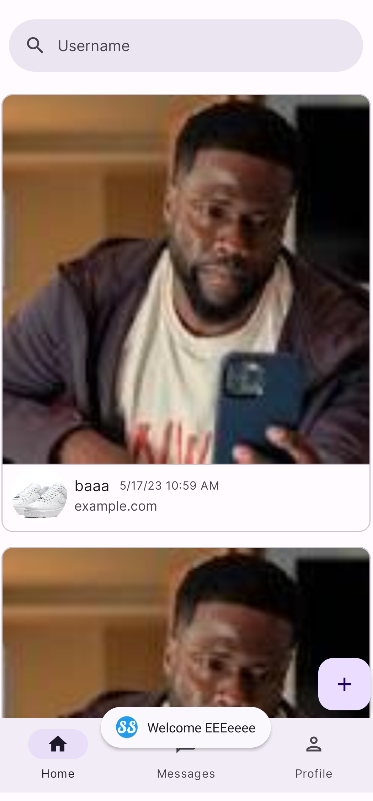
Post Page
Want to see more info about a post? No problem, just tap on the post's
image to open the post page! Or tap on the post caption to open the author's
profile!

You can then like the post by tapping on the heart icon, or comment on the post...
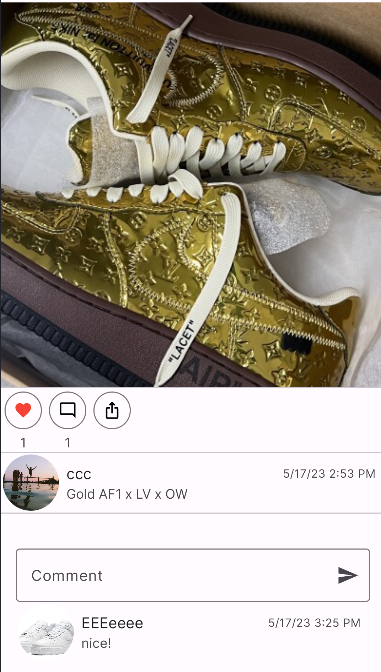
Here we commented nice!
because look at the heat those shoes bring! 🔥
Psst, you can choose to open additional web page about the shoe in the post
by tapping on the share button!
Also, if it is your post, there will be an appropriately shown delete button
permitting you to delete the post.
User profile search
Ever wanted to find a specific user? Well you can search by username!
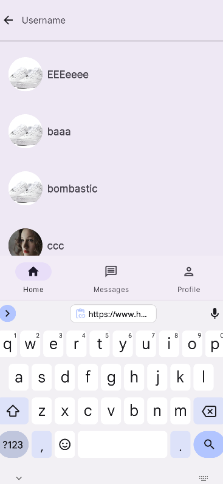
For example, let's say we wanted to find ccc:
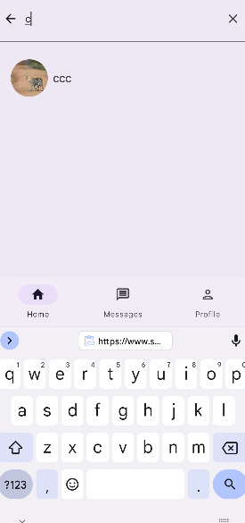
We can then click on their profile preview to view their profile!
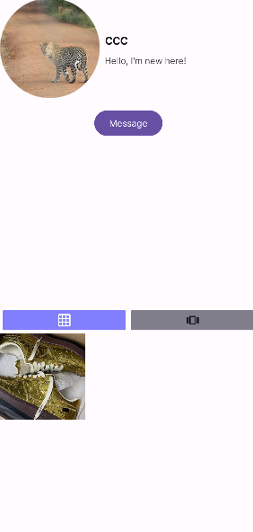
Here, we can tap on any of their posts to enlarge it and see more info, or interact with it!
Creating a new post
To create a new post, tap on the floating +
button on the bottom right of the screen.
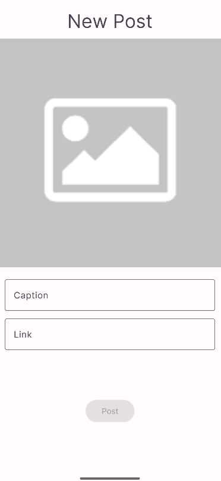
Tap on the image to select an image from your gallery (provided you have given us permission
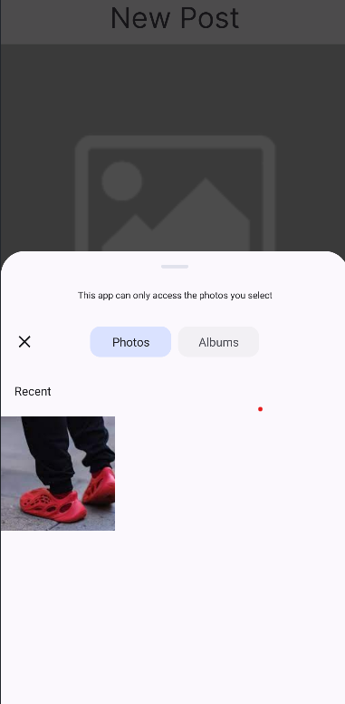
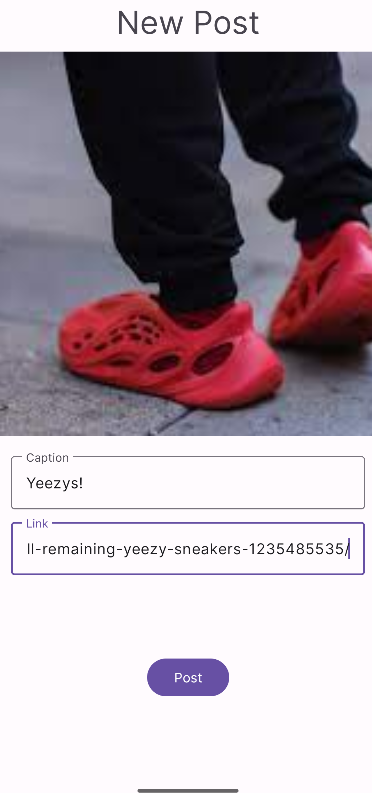
Messages
We know how much of a chatterbox you are, so we design a real-time chat system for you to
waffle to your heart's content. Simply tap the 'Messages' item on the bottom of the screen
and it'll take you to this screen, where you see everyone you can message.

Tapping on any of these will take you to the chat page, where you can chat with that user!
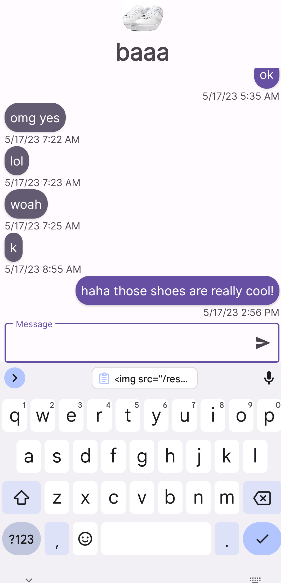
Whenever someone sends a message, the recipient receives it within a second!
And if you're not on the chat page, you'll get a notification! (Though if notification
annoy you, you can choose to not allow them).
My Profile
Of course you want to see just your own posts, which you can do no problem!
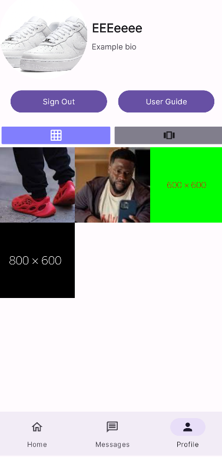
Here, you can sign out, or view this awesome user guide again! 🔥🔥🔥
Alternatively, you can see more details about your posts by tapping on them.